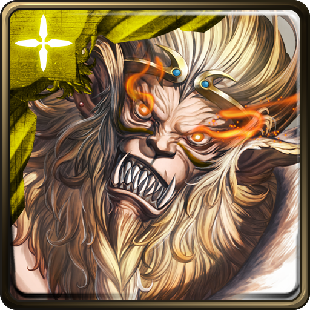
 大聖減傷計算器
大聖減傷計算器
|
|
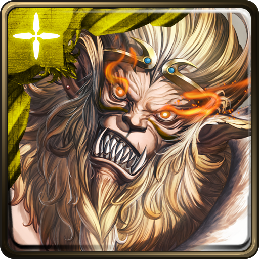
大聖減傷計算器
|

| 血量剩餘： 0 |
主線任務 |
單雙週副本 | 地獄級關卡 | 旅人的記憶 | 無限迴廊 |
| 地獄級關卡 | 夢魘級關卡 | 戰慄級關卡 | 永久關閉關卡 |
| 全部 | 水屬性 | 火屬性 | 木屬性 | 光屬性 | 暗屬性 |
| 關卡 | 建議血量 | 備註 |
| 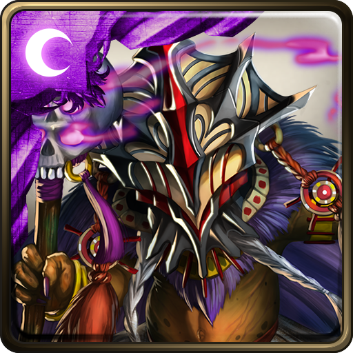 地獄級：魔王的再臨 | 17528 |
R4有固定扣血，需要盡快解決。 此血量剛好能撐住R6 Combo法印的六連擊。 |
| 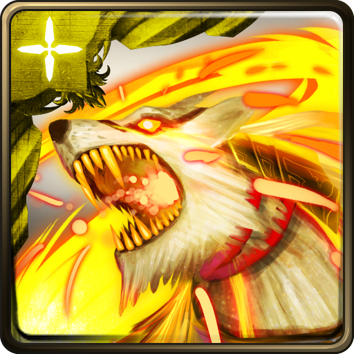 地獄級：日月的撕咬者 | 6529 |
R4、R5所需血量皆過高，必須盡快解決。 此血量剛好能撐住R6所有敵人的攻擊。 |
| 地獄級：日月的啃喰者 | 9405 |
R3、R4所需血量皆過高，必須盡快解決。 R6有固定扣血，需要盡快解決。 此血量剛好能撐住R5所有敵人的連擊。 |
| 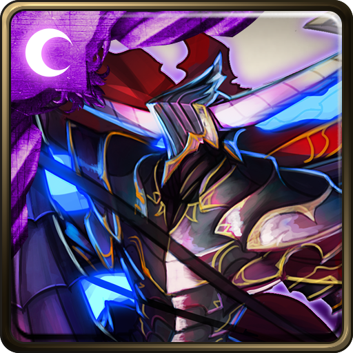 地獄級：八腳馬騎士 | 10422 |
R4所需血量過高，必須盡快解決。 此血量剛好能撐住R5所有敵人的攻擊。 |
| 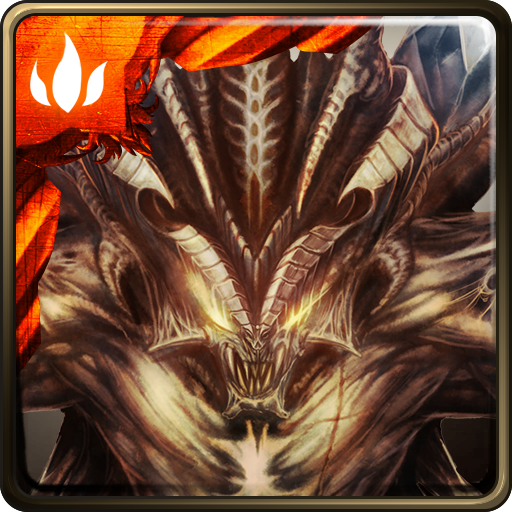 地獄級：操縱法則的魔王 | 5621 |
R3有越戰越強，請拿捏好敵方血量再爆發。 R5所需血量過高，必須盡快解決。 此血量剛好能撐住R1所有敵人的攻擊。 |
| 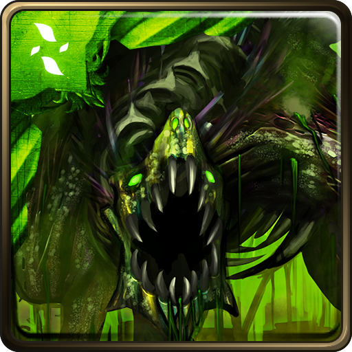 地獄級：世界啃蝕者 | 5533 |
R2有越戰越強，請拿捏好敵方血量再爆發。 此血量剛好能撐住R1所有敵人的攻擊。 此血量能撐住R6最多3粒風化符石的攻擊。 |
| 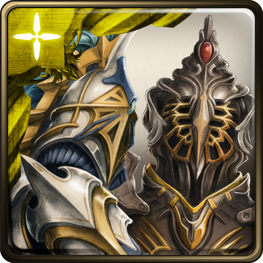 地獄級：天使長的遺願 | 10693 |
R3有越攻越強，必須爆發帶過。 此血量剛好能撐住R5敵人的攻擊。 |
| 地獄級：元素流向的導引 | 18493 |
R1有越扣越強，必須盡快解決。 R7有固定扣血，需要盡快解決。 R8-2有越戰越強，請拿捏好敵方血量再爆發。 此血量剛好能撐住R4所有敵人的攻擊。 |
| 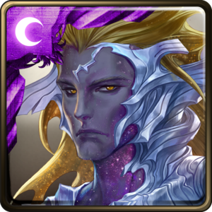 地獄級：眾神之主 | 16176 |
R5、R6-1有固定扣血，需要盡快解決。 R8-2有越攻越強，必須爆發帶過。 R9、R10-1所需血量過高，必須盡快解決。 R10-2有固定扣血100%，必須盡快解決。 此血量剛好能撐住R10-3敵人的四下連擊。 |
| 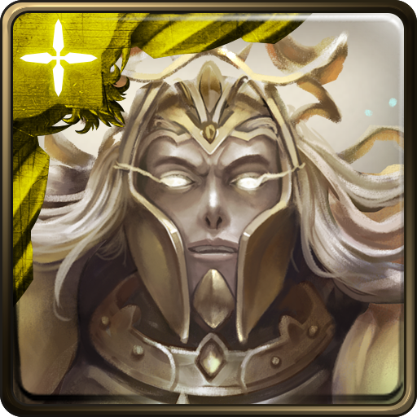 地獄級：蒼穹驚雷 | 9570 |
R7所需血量過高，必須五回合內盡快解決。 此血量剛好能撐住R6敵人的攻擊。 |
| 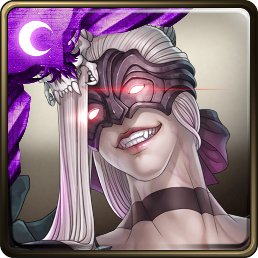 地獄級：曙沒之闇 | 7968 (9752) (22404) |
R2有固定扣血，需要盡快解決。 R3所需血量過高，必須盡快解決。 (若血量達到9752則可撐住R3單隻連擊) (若血量達到22404則可撐住R3兩隻同時連擊) 此血量剛好能撐住R4敵人的攻擊。 |
| 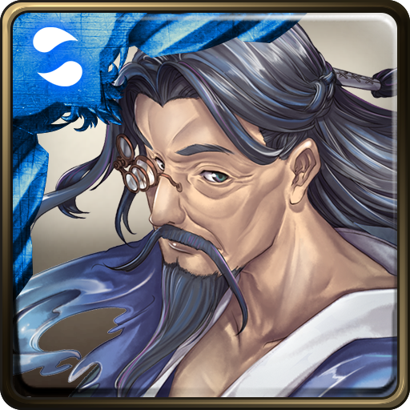 地獄級：玉清之主來臨 | 14875 |
R3-1所需血量過高，必須盡快解決。 此血量剛好能撐住R6敵人的攻擊。 (此血量僅計算R6大聖本身的種族剋制) |
| 地獄級：上清教主降尊 | 6083 (16951) |
R2有越攻越強，必須爆發帶過。 R4最左側的魔神之劍須先行解決。 R5無視減傷的管狐飼者瑪莉曼必須盡快解決。 此血量剛好能撐住R4剩下三個敵人的攻擊。 (若血量達到16951則可撐住R5所有敵人的攻擊) |
| 地獄級：太清尊者降生 | 5325 |
R5有固定扣血，需要盡快解決。 此血量剛好能撐住R3所有敵人的攻擊。 |
| 地獄級：魔境的審判 | 16401 |
R1無視減傷的木龍牙棋必須盡快解決。 R2、R6有越戰越強，請拿捏好敵方血量再爆發。 此血量剛好能撐住R3敵人的連擊。 |
| 地獄級：黃衣之王的印記 | 13335 |
R2有固定扣血，需要盡快解決。 R5有越戰越強，請拿捏好敵方血量再爆發。 此血量剛好能撐住R4敵人的攻擊。 (此血量未計算R3的屬性剋制) |
| 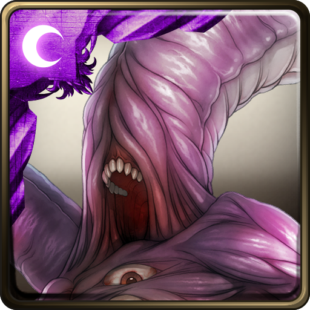 地獄級：無貌之神的誓約 | 14453 |
此血量剛好能撐住R6敵人的攻擊。 R6務必不可一波帶走，此血量撐不住增攻後的連擊。 |
| 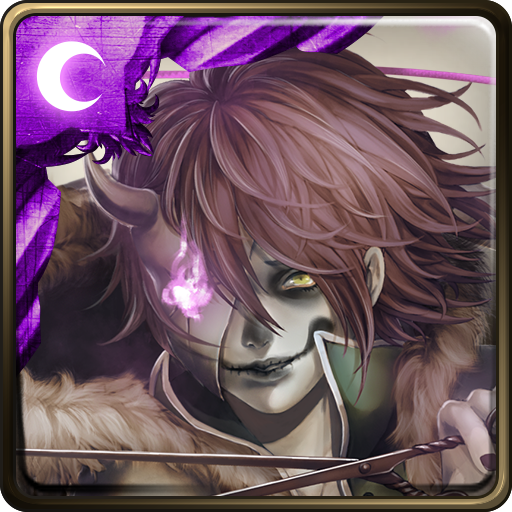 地獄級：歡樂的墓場 | 19501 |
R2必須於兩回合內解決。 此血量剛好能撐住R1所有敵人的攻擊。 |
| 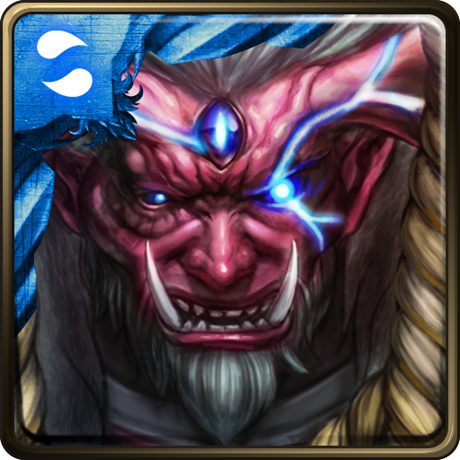 地獄級：不甘之恨 | 9293 |
R2有越戰越強，請拿捏好敵方血量再爆發。 R3盡量不要先攻擊到會狂暴的座敷童子。 此血量剛好能撐住R3所有敵人的攻擊。(含觸發狂暴後) |
| 地獄級：賢者的考驗 | 8106 |
R3有固定扣血，需要盡快解決。 R7、R9、R10所需血量過高，必須盡快解決。 此血量剛好能撐住R1所有敵人的攻擊。 (別鬧了這關你不會用磨的w) |
| 地獄級：實現願望的代價 | 5319 (27415) |
R2、R4(狂暴後)所需血量過高，必須盡快解決。 R3有固定扣血，需要盡快解決。 R6有越戰越強，請拿捏好敵方血量再爆發。 此血量剛好能撐住R1所有敵人的攻擊。 (若血量達到27415則可撐住R2所有敵人的攻擊) (此血量未計算R2的種族剋制) |
| 地獄級：與子偕老 | 14315 |
R1所需血量過高，必須盡快解決。 R2有固定扣血，需要盡快解決。 此血量剛好能撐住R1單一敵人的攻擊。 (此血量未計算R6的種族剋制) |
| 地獄級：代表力量的翅膀 | 15183 | 此血量剛好能撐住R6 Combo法印的六連擊。 |
| 地獄級：強大的火力支援 | 6539 |
R3有越攻越強，必須盡快解決。 R4有固定扣血，必須盡快解決。 R8有無視減傷的砲擊，必須在五回合內解決。 此血量剛好能撐住R2所有敵人的最大攻擊。 |
| 地獄級：龍焰重燃 | 12841 (17013) |
R6所需血量過高，必須盡快解決。 R8-2有越戰越強，請拿捏好敵方血量再爆發。 此血量剛好能撐住R1兩隻火龍牙棋的攻擊。 (若血量達到17013則可撐住R7敵人的六下連擊) |
| 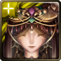 地獄級：眾喃之耳 | 13851 |
R6所需血量過高，必須盡快解決。 此血量剛好能撐住R7敵人的攻擊。 (本關卡禁心珠，不適合使用磨隊) |
| 地獄級：異變的永生 | 7719 (18340) |
R1所需血量過高，必須盡快解決。 (R1建議盡快解決無視減傷的機械工程兵) R6有越扣越強，必須盡快解決。 R7-1禁消心珠，必須盡快解決。 此血量剛好能撐住R2所有敵人的攻擊。 (若血量達到18340則可撐住R1全部敵人的攻擊) |
| 地獄級：一諾千金 | 10364 (11675) |
R1狂暴後所需血量過高，必須盡快解決。 R2(火妹)所需血量過高，必須盡快解決。 R6有固定扣血100%，必須盡快解決。 此血量剛好能撐住R7-2敵人的攻擊。 (若血量達到11675則可撐住R3敵人(木妹)的第五次攻擊) |
| 地獄級：眾魔的帝君 | 16785 |
R1所需血量過高，必須盡快解決。 R3有固定扣血，必須盡快解決。 R6、R7-1有越戰越強，請拿捏好敵方血量再爆發。 R7-3有越攻越強，必須盡快解決。 此血量剛好能撐住R5敵人的攻擊。 |
| 地獄級：奪魂魅音 | ---- | (神族的大聖進不了場的，想保險的試試根性隊吧！) |
| 地獄級：所羅門的悲劇 | 4264 |
R4所需血量過高，必須盡快解決。 此血量剛好能撐住R3能力繼承後敵人的攻擊。 |
| 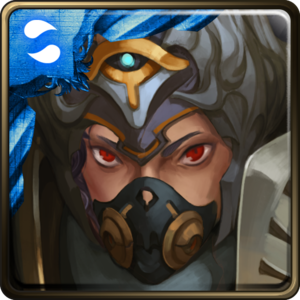 地獄級：亙古流存的力量 | 10158 |
R4有生命倒數，必須盡快解決或是多帶狀態技能隊員以解除生命倒數。 R5(左第一、二階段)所需血量過高，必須盡快解決。 R5(本體第二階段)有越攻越強，必須盡快解決。 此血量剛好能撐住R5敵人(本體第二階段)的第四下攻擊。 |
| 地獄級：老師遺留的記錄 | 14984 |
R2有越戰越強，請拿捏好敵方血量再爆發。 此血量剛好能撐住R6敵人的六次連擊。 R3務必兩隻一波帶走，此血量撐不住增攻後的攻擊。 |
| 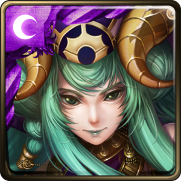 地獄級：王者的嫉妒 | 3795 (15001) |
R1有固定扣血，必須盡快解決。 R7所需血量過高，必須盡快解決。 此血量剛好能撐住R6-2敵人的攻擊。 此血量撐不住R5敵人的自爆。 (若血量達到15001則可撐住R5敵人的自爆) |
| 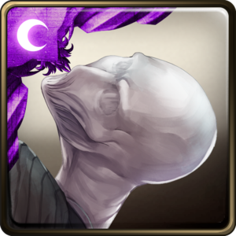 地獄級：瘦長身影的傳說 | 6221 |
R1有固定扣血，必須盡快解決。 R4有攻後死亡，需要盡快解決。 此血量剛好能撐住R5敵人的攻擊。 此血量撐不住R1所有敵人的攻擊。 |
| 地獄級：甦醒之花 | 8587 |
R6有越攻越強，必須盡快解決。 R7-2有越扣越強，必須盡快解決。 此血量剛好能撐住R5敵人的攻擊。 |
| 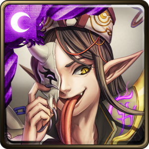 地獄級：陰與陽的分界 | 7850 |
R2所需血量過高，必須盡快解決。 R3有越攻越強，必須盡快解決。 此血量剛好能撐住R6-2敵人的攻擊。 |
| 地獄級：海上的秘密交易 | 16338 | 此血量剛好能撐住R7-2敵人的攻擊。 |
| 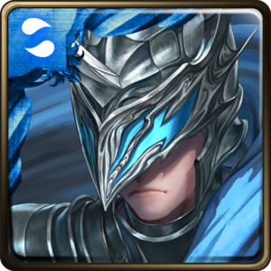 地獄級：行使正義的懲處 | 11314 (19656) |
R4所需血量過高，必須盡快解決。 R7-1有越攻越強，必須盡快解決。 R7-1、R7-2有越扣越強，必須盡快解決。 此血量剛好能撐住R3敵人的七下連擊。 (若血量達到19656則可撐住R4敵人的攻擊) |
| 地獄級：貴族之焰 | 13702 (17978) |
R1、R6-2有固定扣血，必須盡快解決。 R5所需血量過高，必須盡快解決。 此血量剛好能撐住R2所有敵人的攻擊。 (若血量達到17978則可撐住R2所有敵人的最大攻擊) |
| 地獄級：樹幹間的風 | 11693 |
此血量剛好能撐住R3敵人的攻擊。 (注意無法同時撐住R3敵人的攻擊與反擊) |
| 地獄級：妖魅之歌 | 13210 |
R5有越戰越強，請拿捏好敵方血量再爆發。 此血量剛好能撐住R5所有敵人的攻擊。 (此血量只計算R5大聖的種族剋制，並只以中間敵人最小攻擊力計算) |
| 地獄級：銀白的身姿 | 13216 | 此血量剛好能撐住R6敵人的六下連擊。 |
| 地獄級：被誘惑的墮落 | 12179 |
R2-2有越戰越強，請拿捏好敵方血量再爆發。 R6-1有固定扣血，必須盡快解決。 此血量剛好能撐住R6-2敵人的三下連擊。 |
| 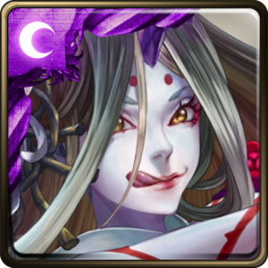 地獄級：武者的執念 | 16585 (18635) |
R2-2、R3所需血量過高，必須盡快解決。 R6-2有越攻越強，必須盡快解決。 此血量剛好能撐住R6-2敵人的第四下攻擊。 (若血量達到18635則可撐住R2-2敵人的攻擊) |
| 地獄級：無名的熊孩子 | 7730 |
R3有越攻越強，必須盡快解決。 此血量剛好能撐住R1所有敵人的攻擊。 |
| 地獄級：美人的心計 | 13981 |
R6-1有固定扣血，必須盡快解決。 R6-2有越戰越強，請拿捏好敵方血量再爆發。 此血量剛好能撐住R3-1敵人的五下連擊。 |
| 地獄級：人骨成劍 | 14325 |
R3-2有固定扣血，必須盡快解決。 R6有越攻越強，必須盡快解決。 R7-2有越戰越強，請拿捏好敵方血量再爆發。 此血量剛好能撐住R6敵人的第四下攻擊。 |
| 地獄級：塵封之書 | 10599 (17729) |
R5有越戰越強，請拿捏好敵方血量再爆發。 此血量剛好能撐住R4敵人的攻擊與兩下反擊。 此血量能撐住R6敵人的五下連擊。 (若血量達到17729則可撐住R6敵人的九下連擊) |
| 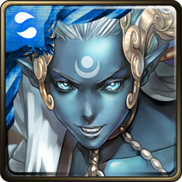 地獄級：梵天之門 | 13661 |
R5-2有越戰越強，請拿捏好敵方血量再爆發。 此血量能撐住R3-2敵人的六下連擊。 |
| 地獄級：響絕金剛鈴 | 3321 |
R4所需血量過高，必須盡快解決。 R7-2有越戰越強，請拿捏好敵方血量再爆發。 此血量能撐住R6敵人的攻擊。 |
| 地獄級：無物可撼動 | 16740 |
R4有越扣越強，必須盡快解決。 R6有越攻越強，必須盡快解決。 此血量能撐住R7-2敵人的五下連擊。 |
| 地獄級：幸福的歸宿 | 10751 |
R4-2、R6-1有固定扣血，必須盡快解決。 此血量能撐住R3全部敵人的最大攻擊。 |
| 地獄級：白兔少年的恩仇 | 15592 |
R3有固定扣血，必須盡快解決。 此血量能撐住R5-1敵人的八下連擊。 |
| 地獄級：不甘孤獨 | 18101 |
R5-2有首回狂暴，需要盡快解決。 R6有越扣越強，必須盡快解決。 此血量能撐住R7-2敵人的最小攻擊。 |
| 地獄級：為故鄉的奮戰 | 13660 |
R2有越戰越強，請拿捏好敵方血量再爆發。 R3-1有越攻越強，必須盡快解決。 此血量能撐住R6敵人的攻擊。 此血量撐不住R7-2敵人復活後的攻擊。 |
| 地獄級：妄者的痴狂 | 17045 |
R5-2有越攻越強，必須盡快解決。 R7-1所需血量過高，必須盡快解決。 此血量能撐住R3-1、R3-2敵人的六下連擊。 |
| 地獄級：興雲雨的蛟 | 12663 |
此血量能撐住R4所有敵人的最大攻擊。 此血量撐不住R7-2敵人50%血以下的攻擊。 |
| 地獄級：史詩的主角 | 13170 |
R3-2有越戰越強，請拿捏好敵方血量再爆發。 R6有固定扣血，必須盡快解決。 此血量能撐住R5-1敵人的攻擊。 此血量撐不住R5-2、R7-2敵人狂暴後的攻擊。 |
| 地獄級：隕落的星耀 | 17562 |
R1有越攻越強，必須盡快解決。 此血量能撐住R3-2敵人的五下連擊。 |
| 地獄級：剽悍的鬥士 | 16667 |
R3有越戰越強，請拿捏好敵方血量再爆發。 R5有固定扣血與越攻越強，必須盡快解決。 R6所需血量過高，必須盡快解決。 此血量能撐住R7-1敵人的五下連擊。 此血量撐不住R4-2敵人的中毒與攻擊。 (此血量未計算R7-1的種族剋制) |
| 地獄級：不能辜負的期望 | 11412 |
R4、R5-2有越攻越強，必須盡快解決。 此血量能撐住R4敵人的第三下攻擊。 此血量撐不住R2月鐮守衛狂暴後的攻擊。 |
| 地獄級：掩藏葉後的密使 | 19075 |
R3-1有固定扣血，必須盡快解決。 R6-2有越攻越強，必須盡快解決。 此血量能撐住R3-2敵人的六下連擊。 |
| 地獄級：暗地裡的守護者 | 16201 |
R3-2有越戰越強，請拿捏好敵方血量再爆發。 此血量能撐住R5-2敵人的五下連擊。 |
| 地獄級：累積的憎恨 | 17998 |
R5-2有越戰越強，請拿捏好敵方血量再爆發。 R6有固定扣血，必須盡快解決。 此血量能撐住R7-2敵人的四下連擊。 |
| 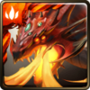 地獄級：無盡的破壞 | 16309 |
R7-1的垂死反擊無法減傷，請注意血量。 R7-2有固定扣血100%，必須盡快解決。 此血量能撐住R3-2敵人的六下連擊。 |
| 地獄級：歡樂的包容者 | 19822 |
R4有固定扣血，必須盡快解決。 此血量能撐住R3-2敵人的六下連擊。 |
| 地獄級：密集的惡意 | 18401 |
R3-1有固定扣血，必須盡快解決。 此血量能撐住R5-1敵人增攻前的攻擊。 |
| 地獄級：邪妖的誘惑 | 18066 |
R3-2有固定扣血100%，必須盡快解決。 此血量能撐住R7-2敵人的四下連擊。 |
| 地獄級：羊駝之主馬超 | 15188 |
R5-2有越戰越強，請拿捏好敵方血量再爆發。 此血量能撐住R2敵人的七下連擊。 |
| 地獄級：雄心壯志 | 19201 |
R3-1、R4有越攻越強，必須盡快解決。 R5-2有越扣越強，必須盡快解決。 此血量能撐住R5-1敵人的攻擊。 |
| 地獄級：雷霆轟鳴 | 19550 |
R7-2有越攻越強，必須盡快解決。 此血量能撐住R3敵人的攻擊。 |
| 地獄級：失去至親的怨念 | 5752 |
R3有固定扣血100%，必須盡快解決。 R6-2有越戰越強，請拿捏好敵方血量再爆發。 此血量能撐住R5敵人的攻擊。 |
| 地獄級：永恆的沉睡 | 13335 |
此血量剛好能撐住R5敵人的攻擊。 此血量無法撐住R1敵人甦醒後的攻擊。 |
| 地獄級：美色誘惑 | 14374 |
此血量能撐住R3敵人的三下連擊。 此血量無法撐住R1所有敵人的最高攻擊。 |
| 全部 | 水屬性 | 火屬性 | 木屬性 | 光屬性 | 暗屬性 |
| 關卡 | 建議血量 | 備註 |
| 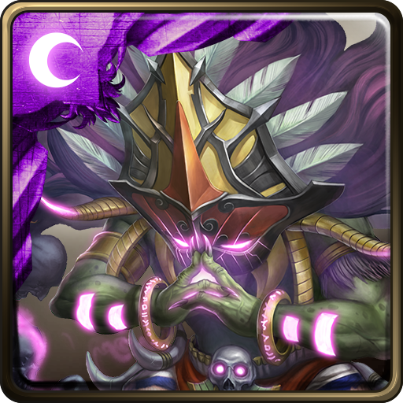 夢魘級：魔王的再臨 | 10910 |
R3有越攻越強，必須爆發帶過。 R8有固定扣血100%，需要盡快解決。 此血量剛好能撐住R2所有敵人的連擊。 |
| 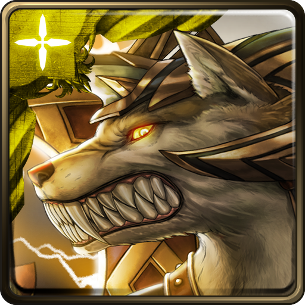 夢魘級：日月的撕咬者 | 5763 |
R7有越攻越強，必須爆發帶過。 此血量剛好能撐住R1所有敵人的攻擊。 |
| 夢魘級：日月的啃喰者 | 12022 |
R8有固定扣血，需要盡快解決。 R9有越戰越強，請拿捏好敵方血量再爆發。 此血量剛好能撐住R1單一敵人的攻擊。 |
| 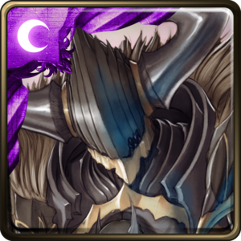 夢魘級：八腳馬騎士 | 16196 |
R3有越攻越強，必須盡快解決。 R9有固定扣血100%，必須盡快解決。 此血量剛好能撐住R10-2敵人的攻擊。 |
| 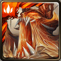 夢魘級：操縱法則的魔王 | 10990 |
R4有越戰越強，請拿捏好敵方血量再爆發。 R7需要能夠爆發的角色。 此血量剛好能撐住R1所有敵人的攻擊。 |
| 夢魘級：世界啃蝕者 | 15926 |
R1建議先解決赤焰蜥蜴戰士。 R2有越戰越強，請拿捏好敵方血量再爆發。 R5有無視減傷，需要能夠雙重爆發。 R6、R8有固定扣血，需要盡快解決。 此血量剛好能撐住R1赤焰蜥蜴戰士的攻擊。 此血量能撐住R10-2最多9粒風化符石的攻擊。 |
| 夢魘級：蒼穹驚雷 | 12965 (17631) |
R4需多帶狀態技能隊員以解除攻後死亡。 (但由於是CD1，必須盡快解決首殺盾的持劍侍女．波比) R6所需血量過高，必須盡快解決。 R2、R10-2有固定扣血，需要盡快解決。 此血量剛好能撐住R5敵人的六下連擊。 (若血量達到17631則可撐住R6開端與終結．女武神斯庫爾德的攻擊) |
| 夢魘級：曙沒之闇 | 16888 |
R2有固定扣血，需要盡快解決。 R5有越戰越強，請拿捏好敵方血量再爆發。 R7、R9所需血量過高，必須盡快解決。 R10-2有回復變零，需要盡快解決。 此血量剛好能撐住R2所有敵人的攻擊。 |
| 全部 | 水屬性 | 火屬性 | 木屬性 | 光屬性 | 暗屬性 |
| 關卡 | 建議血量 | 備註 |
| 戰慄級：歡樂的墓場 | 11353 |
R2有越攻越強，必須盡快解決。 此血量剛好能撐住R4敵人的攻擊。 |
| 戰慄級：玉清之主來臨 | 15232 |
R4-2有越戰越強，請拿捏好敵方血量再爆發。 此血量剛好能撐住R6敵人的五下連擊。 |
| 戰慄級：掙脫狂者的支配 | 13848 | 此血量剛好能撐住R6-2敵人的攻擊。 |
| 戰慄級：絕壁的防守 | 18911 |
R6-2有固定扣血100%，必須盡快解決。 此血量剛好能撐住R4-1敵人的五下連擊。 |
| 戰慄級：疾速如風 | 14550 |
R4-1有越攻越強，必須盡快解決。 此血量剛好能撐住R4-2敵人的七下連擊。 |
| 關卡 | 建議血量 | 備註 |
| 以下關卡已永久關閉 | ||
| 地獄級：遠洋的王者 | 7614 |
R4有越戰越強，請拿捏好敵方血量再爆發。 此血量剛好能撐住R1所有敵人的攻擊。 (此血量未計算R2的種族剋制) |
| 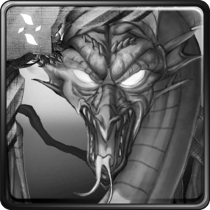 地獄級：高傲女巫的化身 | 6245 | 此血量剛好能撐住R4所有敵人的攻擊。 |
| 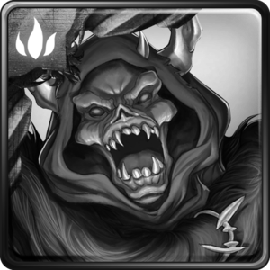 地獄級：邪惡的野心 | ---- | (神族的大聖進不了場的，想保險的試試根性隊吧！) |
| 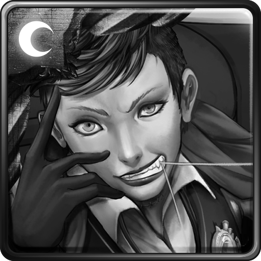 地獄級：巨星的君臨 | 2903 (18094) |
R1有越攻越強，必須盡快解決。 此血量剛好能撐住R6敵人的攻擊。 (此血量未計算R5的種族剋制) (若血量達到18094則可撐住R1所有(含第六次連擊後)攻擊) |
| 地獄級：鞠躬盡瘁的忠臣 | 8992 |
R3有回復變零，需要盡快解決。 R5有固定扣血，需要盡快解決。 R7-2有越攻越強，必須盡快解決。 此血量剛好能撐住R3所有敵人的攻擊。 |
| 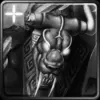 地獄級：瘋子的機關獸 | 5085 (18595) |
R5所需血量過高，必須盡快解決。 此血量剛好能撐住R1所有敵人的攻擊。 (若血量達到18595則可撐住R5的攻擊) |
| 地獄級：為愛魔怔的天才 | 18832 |
R2有越攻越強，必須盡快解決。 R3有機會遇到固定扣血100%，必須盡快解決。 R6所需血量過高，必須盡快解決。 R7-2有越戰越強，請拿捏好敵方血量再爆發。 此血量剛好能撐住R1所有敵人的攻擊。 |
| 地獄級：壞蛋的惡行 | 4264 |
R4所需血量過高，必須盡快解決。 此血量剛好能撐住R3能力繼承後敵人的攻擊。 |
| 地獄級：一眾神明之始 | 7534 (15873) |
R5有固定扣血，需要盡快解決。 R6有無視減傷，建議破防帶過。 此血量剛好能撐住R1所有敵人的攻擊。 (若血量達到15873則可撐住R6敵人的攻擊) |
| 地獄級：陰險毒辣的教主 | 8512 (13259) |
R3有無視減傷，建議破防帶過。 R7、R8皆需要高爆發角色，建議配置雙重爆發或是攜帶能清除R7自爆的技能。 R8所需血量過高，必須盡快解決。 此血量剛好能撐住R4所有敵人的攻擊與扣血。 (若血量達到13259則可撐住R3敵人的攻擊) |
| 地獄級：失足成魔的劍仙 | 8119 (18324) |
R5有越攻越強，必須盡快解決。 此血量剛好能撐住R3所有敵人的攻擊。 (若血量達到18324則可撐住R1所有敵人的攻擊) |
| 地獄級：魔界夜叉的謀士 | 13335 |
R5有越戰越強，請拿捏好敵方血量再爆發。 此血量剛好能撐住R3-1敵人的攻擊。 |
| 地獄級：醉心武技的至尊 | 13963 |
R6需多帶狀態技能隊員以解除無視減傷。 此血量剛好能撐住R6敵人的攻擊。 |
| 地獄級：行俠仗義的劍客 | 15136 |
R2有越戰越強，請拿捏好敵方血量再爆發。 此血量剛好能撐住R4神農奇鼎．拓跋玉兒的六下連擊。 (通常慢磨的話第一關必吃石，請謹慎考慮) |
| 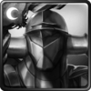 地獄級：攻城而來的蹄聲 | 14233 |
R2有固定扣血，需要盡快解決。 R7有越戰越強，請拿捏好敵方血量再爆發。 此血量剛好能撐住R3邪譽承傳．暗影劍豪的六次連擊。 |
| 地獄級：王座的銳劍 | 16933 |
R1有越攻越強，必須盡快解決。 R4包含反擊所需血量過高，必須盡快解決。 R6有固定扣血，必須盡快解決。 此血量剛好能撐住R7敵人的攻擊。 |
| 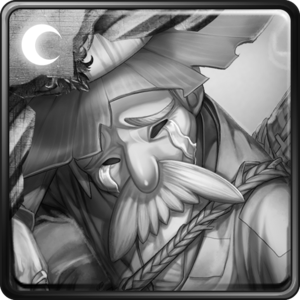 地獄級：窮富翁的守護神 | 11845 |
需多帶狀態技能隊員以解除回復變0。 此血量剛好能撐住R3敵人的六下連擊。 |
| 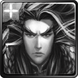 地獄級：稱霸中原 | 16982 |
R4-1有固定扣血，必須盡快解決。 R6-2所需血量過高，必須盡快解決。 此血量能撐住R3敵人的六下連擊。 |
| 地獄級：邪尊道之主 | 12575 | 此血量能撐住R6-2敵人的最大攻擊。 |
| 夢魘級：天界第一毀滅之神 | 18031 |
R3有越攻越強，必須盡快解決。 R6-2有固定扣血100%，必須盡快解決。 R9復活後所需血量過高，必須盡快解決。 此血量剛好能撐住R4-2敵人的四下連擊。 此血量撐不住R7惡鬼殺人魚狂暴後的攻擊。 |
| 地獄級：最凶最惡的強者 | 16483 | 此血量能撐住R3-2敵人的六下連擊。 |
| 地獄級：誓將人類滅絕 | 16781 |
R1有固定扣血，必須盡快解決。 R3-2有越攻越強，必須盡快解決。 R5-1有越扣越強，必須盡快解決。 此血量能撐住R4敵人的六下連擊。 |
| 戰慄級：改造戰士的叛變 | 9144 |
R6-1有固定扣血，需要盡快解決。 此血量剛好能撐住R3所有敵人的攻擊。 此血量撐不住R6-2敵人的首次攻擊。 |
| 畫緣相遇 | 機械神兵 | 追擊始源 | 魔境入侵者 | 奇想典故 | 大蛇的眷屬 |
| 逐願邪星 | 三教頂峰 | 粉碎亂鬥 | 高手隱士 | 科學少女 | 死物附靈 |
| 獸伴 | 海上霸者 | 都市傳說 | 魔變凶龍 | 列王之爭 | 死亡騎士 |
| 北域巨人 | 碎羽墮落者 | 仙劍列傳 | 童話仙蹤 | 怪物彈珠 | 巴比倫神明 |
| 撒旦魔將 | 星詠之歌姬 | 百鬼夜行 | 修驗道式神 | 要塞兵團 | 遠古的恐懼 |
| 魔境住民 | 七原罪 | 貓公爵傭兵團 |
| 關卡 | 建議血量 | 備註 |
| 畫緣相遇 | ||
| 獨樹一幟的風格 | 6933 | 此血量剛好能撐住R7敵人的攻擊。 |
| 獨樹一幟的風格 | 10347 | 此血量剛好能撐住R7敵人的攻擊。 |
| 無名的痛 | 9219 | 此血量剛好能撐住R4敵人的六下連擊。 |
| 無名的痛 | 19273 | 此血量剛好能撐住R8敵人的六下連擊。 |
| 苟杳與太上老君 | 2489 | 此血量剛好能撐住R7敵人的攻擊。 |
| 苟杳與太上老君 | 5316 | 此血量剛好能撐住R8敵人的攻擊與反擊。 |
| 關卡 | 建議血量 | 備註 |
| 機械神兵 | ||
| 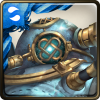 機械族的誕生 | 18832 |
R7有越攻越強，必須盡快解決。 此血量剛好能撐住R7敵人的第四下攻擊。 |
| 機械族的誕生 | 14054 |
R7有越攻越強，必須盡快解決。 此血量剛好能撐住R7敵人的第四下攻擊。 |
| 惡劣的玩笑 | 11196 | 此血量剛好能撐住R7敵人的六下連擊。 |
| 惡劣的玩笑 | 16453 | 此血量剛好能撐住R7敵人的七下連擊。 |
| 失敗作的救贖 | 10912 | 此血量剛好能撐住R7敵人的六下連擊。 |
| 失敗作的救贖 | 16285 | 此血量剛好能撐住R7敵人的六下連擊。 |
| 關卡 | 建議血量 | 備註 |
| 追擊始源 | ||
| 魔族的嫉妒 | 3342 (3431) |
此血量剛好能撐住R4敵人的攻擊。 (若血量達到3431則可撐住腹蛇異兵的最大攻擊) (若遇到固定扣血的諾弗．刻，需要盡快解決) |
| 魔族的嫉妒 | 4987 (5121) |
此血量剛好能撐住R4敵人的攻擊。 (若血量達到5121則可撐住腹蛇異兵的最大攻擊) (若遇到固定扣血的諾弗．刻，需要盡快解決) |
| 魔族的怠惰 | 2569 (19675) |
此血量剛好能撐住R7敵人的攻擊。 (若血量達到19675則可撐住R8敵人狂暴後的攻擊) |
| 魔族的怠惰 | 3477 | 此血量剛好能撐住R7敵人的攻擊。 |
| 魔族的貪婪 | 5439 |
R8有越攻越強，必須盡快解決。 此血量剛好能撐住R4敵人的攻擊與反擊。 |
| 魔族的貪婪 | 8117 |
R8有越攻越強，必須盡快解決。 此血量剛好能撐住R4敵人的攻擊與反擊。 |
| 關卡 | 建議血量 | 備註 |
| 魔境入侵者 | ||
| 拜倒裙下 | 7997 | 此血量剛好能撐住R7敵人的攻擊與反擊。 |
| 拜倒裙下 | 15148 (18540) |
此血量剛好能撐住R8敵人的五下連擊。 (若血量達到18540則可撐住R8敵人的六下攻擊) |
| 抵抗不幸 | 5790 | 此血量剛好能撐住R8敵人的最大攻擊。 |
| 抵抗不幸 | 8764 | 此血量剛好能撐住R8敵人的最大攻擊。 |
| 對愛麗絲的執著 | 3897 (11683) |
R7有越戰越強，請拿捏好敵方血量再爆發。 此血量剛好能撐住僧侶沃爾特的最大攻擊。 (由於可能遇到無視減傷的術士亞歷克斯，建議血量達到11683) |
| 對愛麗絲的執著 | 5815 (17436) |
R7有越戰越強，請拿捏好敵方血量再爆發。 此血量剛好能撐住僧侶沃爾特的最大攻擊。 (由於可能遇到無視減傷的術士亞歷克斯，建議血量達到17436) |
| 關卡 | 建議血量 | 備註 |
| 奇想典故 | ||
| 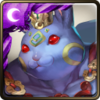 致命的麻糬 | 3173 | 此血量剛好能撐住R8敵人復活後的攻擊。 |
| 致命的麻糬 | 3264 | 此血量剛好能撐住R4敵人的攻擊。 |
| 關卡 | 建議血量 | 備註 |
| 大蛇的眷屬 | ||
| 以下關卡已永久關閉 | ||
| 大蛇的初現 | 10521 | 此血量剛好能撐住R8-2敵人的六下連擊。 |
| 大蛇的初現 | 15700 | 此血量剛好能撐住R8-2敵人的六下連擊。 |
| 大蛇的八傑集 | 12430 | 此血量剛好能撐住R8-2敵人的第四下之後(含)的攻擊。 |
| 大蛇的八傑集 | 15345 (21557) |
此血量剛好能撐住R4敵人的七下連擊。 (若血量達到21557則可撐住R8-2敵人的第三下攻擊) |
| 關卡 | 建議血量 | 備註 |
| 逐願邪星 | ||
| 求利的善行 | 2187 | 此血量剛好能撐住R4敵人的攻擊。 |
| 求利的善行 | 5870 | 此血量剛好能撐住R8敵人的攻擊與連續反擊。 |
| 即將失去的痛苦 | 2219 (18911) |
R8所需血量過高，必須盡快解決。 此血量剛好能撐住R4敵人的攻擊。 (若血量達到18911則可撐住R8敵人的攻擊) |
| 即將失去的痛苦 | 3311 |
R8所需血量過高，必須盡快解決。 此血量剛好能撐住R4敵人的攻擊。 |
| 創造容身之所 | 3551 (11683) |
R4有生命倒數，必須盡快解決或是多帶狀態技能隊員以解除生命倒數。 此血量剛好能撐住R7敵人的攻擊。 (由於可能遇到無視減傷的術士亞歷克斯，建議血量達到11683) |
| 創造容身之所 | 5299 (17436) |
R4有生命倒數，必須盡快解決或是多帶狀態技能隊員以解除生命倒數。 此血量剛好能撐住R7敵人的攻擊。 (由於可能遇到無視減傷的術士亞歷克斯，建議血量達到17436) |
| 關卡 | 建議血量 | 備註 |
| 三教頂峰 | ||
| 以下關卡已永久關閉 | ||
| 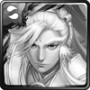 三尺秋水塵不染 天下無雙 | 9641 |
R4有越攻越強，必須盡快解決。 此血量剛好能撐住R4敵人的第四下攻擊。 |
| 三尺秋水塵不染 天下無雙 | 14341 |
R4有越攻越強，必須盡快解決。 此血量剛好能撐住R4敵人的第四下攻擊。 |
| 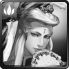 疏樓更迭 龍麟不減風采 | 2348 | 此血量剛好能撐住R8敵人的攻擊。 |
| 疏樓更迭 龍麟不減風采 | 3264 | 此血量剛好能撐住R8敵人的攻擊。 |
| 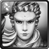 殺生為護生，斬業非斬人 | 4137 | 此血量剛好能撐住R4敵人的攻擊與反擊。 |
| 殺生為護生，斬業非斬人 | 6174 | 此血量剛好能撐住R4敵人的攻擊與反擊。 |
| 關卡 | 建議血量 | 備註 |
| 粉碎亂鬥 | ||
| 井伊的當家 | 16927 | 此血量剛好能撐住R9敵人復活後的攻擊。 |
| 井伊的當家 | 14422 |
R9復活後所需血量過高，必須盡快解決。 此血量剛好能撐住R8敵人的六下連擊。 |
| 牛若丸的愛妾 | 16927 | 此血量剛好能撐住R9敵人復活後的攻擊。 |
| 牛若丸的愛妾 | 13561 |
R9復活後所需血量過高，必須盡快解決。 此血量剛好能撐住R7敵人的攻擊與連續反擊。 |
| 關卡 | 建議血量 | 備註 |
| 高手隱士 | ||
| 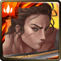 雙刀的羈絆 | 3602 | 此血量剛好能撐住R8敵人的最大連擊。 |
| 雙刀的羈絆 | 5605 | 此血量剛好能撐住R8敵人的最大連擊。 |
| 未能實現的約定 | 9707 |
R4有固定扣血，需要盡快解決。 R7有越戰越強，請拿捏好敵方血量再爆發。 此血量剛好能撐住R8敵人的攻擊。 |
| 未能實現的約定 | 14488 |
R4有固定扣血，需要盡快解決。 R7有越戰越強，請拿捏好敵方血量再爆發。 此血量剛好能撐住R8敵人的攻擊。 |
| 暗夜的黑手 | 5637 | 此血量剛好能撐住R3敵人的攻擊與連續反擊。 |
| 暗夜的黑手 | 8411 | 此血量剛好能撐住R3敵人的攻擊與連續反擊。 |
| 關卡 | 建議血量 | 備註 |
| 科學少女 | ||
| 新金屬時代．水 | 14619 |
R5有越攻越強，必須盡快解決。 此血量剛好能撐住R5敵人的第五下攻擊。 |
| 新金屬時代．水 | 10910 |
R5有越攻越強，必須盡快解決。 此血量剛好能撐住R5敵人的第四下攻擊。 |
| 新金屬時代．火 | 2351 | 此血量剛好能撐住R5敵人的攻擊。 |
| 新金屬時代．火 | 3210 | 此血量剛好能撐住R5敵人的攻擊。 |
| 新金屬時代．木 | 12224 | 此血量剛好能撐住R6敵人的五下連擊。 |
| 新金屬時代．木 | 14179 | 此血量剛好能撐住R6敵人的四下連擊。 |
| 新金屬時代．光 | 4150 |
R6有固定扣血，需要盡快解決。 此血量剛好能撐住R5敵人的攻擊。 |
| 新金屬時代．光 | 7686 |
R6有固定扣血，需要盡快解決。 此血量剛好能撐住R5敵人的攻擊。 |
| 新金屬時代．暗 | 1902 |
R5有固定扣血，需要盡快解決。 此血量剛好能撐住R6敵人的攻擊。 |
| 新金屬時代．暗 | 2630 |
R5有固定扣血，需要盡快解決。 此血量剛好能撐住R6敵人的攻擊。 |
| 關卡 | 建議血量 | 備註 |
| 死物附靈 | ||
| 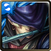 物靈附身．水 | 2615 | 此血量剛好能撐住R9敵人的攻擊。 |
| 物靈附身．水 | 3706 | 此血量剛好能撐住R9敵人的攻擊。 |
| 物靈附身．火 | 14926 |
R8有越攻越強，必須盡快解決。 此血量剛好能撐住R8敵人的第四下攻擊。 |
| 物靈附身．火 | 12334 |
R8有越攻越強，必須盡快解決。 此血量剛好能撐住R8敵人的第三下攻擊。 |
| 物靈附身．木 | 7582 (16947) |
R3所需血量過高，必須盡快解決。 R6有固定扣血，需要盡快解決。 此血量剛好能撐住R9敵人的最大攻擊。 (若血量達16947則可撐住R3敵人的攻擊) |
| 物靈附身．木 | 10690 |
R3所需血量過高，必須盡快解決。 R6有固定扣血，需要盡快解決。 此血量剛好能撐住R9敵人的最大攻擊。 |
| 物靈附身．光 | 10111 | 此血量剛好能撐住R6敵人的七次連擊。 |
| 物靈附身．光 | 15091 | 此血量剛好能撐住R6敵人的七次連擊。 |
| 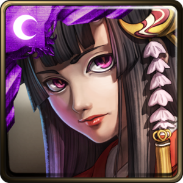 物靈附身．暗 | 2395 | 此血量剛好能撐住R8敵人的攻擊。 |
| 物靈附身．暗 | 3573 | 此血量剛好能撐住R8敵人的攻擊。 |
| 關卡 | 建議血量 | 備註 |
| 獸伴 | ||
| 寵獸傳說．水 | 2886 | 此血量剛好能撐住R8敵人的攻擊。 |
| 寵獸傳說．水 | 3709 | 此血量剛好能撐住R8敵人的攻擊。 |
| 寵獸傳說．火 | 11793 |
R7有越攻越強，必須盡快解決。 此血量剛好能撐住R7敵人的第四下攻擊。 |
| 寵獸傳說．火 | 8846 |
R7有越攻越強，必須盡快解決。 此血量剛好能撐住R7敵人的第三下攻擊。 |
| 寵獸傳說．木 | 2022 |
R7所需血量過高，必須盡快解決。 此血量剛好能撐住R3敵人的攻擊。 |
| 寵獸傳說．木 | 3017 |
R7所需血量過高，必須盡快解決。 此血量剛好能撐住R3敵人的攻擊。 |
| 寵獸傳說．光 | 8927 | 此血量剛好能撐住R8敵人的七次連擊。 |
| 寵獸傳說．光 | 12002 | 此血量剛好能撐住R8敵人的七次連擊。 |
| 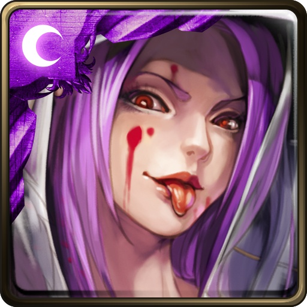 寵獸傳說．暗 | 1701 |
R7有越戰越強，請拿捏好敵方血量再爆發。 此血量剛好能撐住R7敵人的攻擊。 |
| 寵獸傳說．暗 | 2538 |
R7有越戰越強，請拿捏好敵方血量再爆發。 此血量剛好能撐住R7敵人的攻擊。 |
| 關卡 | 建議血量 | 備註 |
| 海上霸者 | ||
| 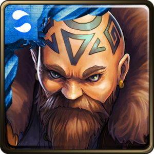 追逐秘寶的傳說．水 | 3682 | 此血量剛好能撐住R7敵人的攻擊。 |
| 追逐秘寶的傳說．水 | 7373 | 此血量剛好能撐住R7敵人的攻擊。 |
| 追逐秘寶的傳說．火 | 7285 | 此血量剛好能撐住R7敵人的中毒與攻擊。 |
| 追逐秘寶的傳說．火 | 10870 | 此血量剛好能撐住R7敵人的中毒與攻擊。 |
| 追逐秘寶的傳說．木 | 6006 | 此血量剛好能撐住R6敵人的攻擊。 |
| 追逐秘寶的傳說．木 | 8964 | 此血量剛好能撐住R6敵人的攻擊。 |
| 追逐秘寶的傳說．光 | 1645 |
R6有越戰越強，請拿捏好敵方血量再爆發。 此血量剛好能撐住R7敵人的攻擊。 |
| 追逐秘寶的傳說．光 | 2696 |
R6有越戰越強，請拿捏好敵方血量再爆發。 此血量剛好能撐住R7敵人的攻擊。 |
| 追逐秘寶的傳說．暗 | 13547 |
R6有越攻越強，必須盡快解決。 此血量剛好能撐住R6敵人的第四次攻擊。 |
| 追逐秘寶的傳說．暗 | 10111 |
R6有越攻越強，必須盡快解決。 此血量剛好能撐住R6敵人的第三次攻擊。 |
| 關卡 | 建議血量 | 備註 |
| 都市傳說 | ||
| 母愛的渴求．水 | 17669 | 此血量剛好能撐住R9敵人的連擊。 |
| 母愛的渴求．水 | 3894 |
R9所需血量過高，必須盡快解決。 此血量剛好能撐住R8敵人的攻擊。 |
| 人口拐賣．火 | 3013 | 此血量剛好能撐住R3敵人的攻擊。 |
| 人口拐賣．火 | 4139 | 此血量剛好能撐住R3敵人的攻擊。 |
| 神秘的蟲人．木 | 2407 (3205) |
R8有越戰越強，請拿捏好敵方血量再爆發。 此血量剛好能撐住R3敵人的攻擊。 (由於可能遇到木龍牙棋，建議血量達到3205) |
| 神秘的蟲人．木 | 3946 (5254) |
R8有越戰越強，請拿捏好敵方血量再爆發。 此血量剛好能撐住R3敵人的攻擊。 (由於可能遇到木龍牙棋，建議血量達到5254) |
| 連環兇殺案．光 | 13335 | 此血量剛好能撐住R8敵人的攻擊。 |
| 連環兇殺案．光 | 13335 | 此血量剛好能撐住R8敵人的攻擊。 |
| 笑臉的儀式．暗 | 11836 |
R7有越攻越強，必須盡快解決。 此血量剛好能撐住R3敵人的五次連擊。 |
| 笑臉的儀式．暗 | 17582 |
R7有越攻越強，必須盡快解決。 此血量剛好能撐住R3敵人的六次連擊。 |
| 關卡 | 建議血量 | 備註 |
| 魔變凶龍 | ||
| 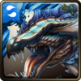 邀約人的目的．水 | 4325 (7493) |
R6有越攻越強，必須盡快解決。 此血量剛好能撐住R3敵人的攻擊與連續反擊。 (若血量達到7493則可撐住R6敵人的第四次攻擊) |
| 邀約人的目的．水 | 2381 (10232) |
R6有越攻越強，必須盡快解決。 此血量剛好能撐住R10敵人的攻擊。 (若血量達到10232則可撐住R6敵人的第四次攻擊) |
| 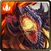 應約的風險．火 | 2954 | 此血量剛好能撐住R10敵人的攻擊。 |
| 應約的風險．火 | 3182 | 此血量剛好能撐住R9敵人的攻擊。 |
| 尋找邀約之人．木 | 8734 | 此血量剛好能撐住R3敵人的五次連擊。 |
| 尋找邀約之人．木 | 12090 | 此血量剛好能撐住R3敵人的六次連擊。 |
| 離目的地不遠．光 | 3759 |
R9所需血量過高，必須盡快解決。 此血量剛好能撐住R10敵人復活後的攻擊。 |
| 離目的地不遠．光 | 4698 |
R9所需血量過高，必須盡快解決。 此血量剛好能撐住R10敵人復活後的攻擊。 |
| 與邀約人會面．暗 | 2624 |
R10有越戰越強，請拿捏好敵方血量再爆發。 此血量剛好能撐住R9敵人的攻擊。 |
| 與邀約人會面．暗 | 3317 |
R10有越戰越強，請拿捏好敵方血量再爆發。 此血量剛好能撐住R9敵人的攻擊。 |
| 關卡 | 建議血量 | 備註 |
| 列王之爭 | ||
| 以下關卡已永久關閉 | ||
| 異世界的軍團 | 5097 | 此血量剛好能撐住R7伊恩．克利夫復活後的攻擊。 |
| 異世界的軍團 | 6253 | 此血量剛好能撐住R7伊恩．克利夫復活後的攻擊。 |
| 關卡 | 建議血量 | 備註 |
| 死亡騎士 | ||
| 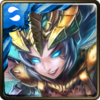 帶來死亡的騎士．水 | 10277 | 此血量剛好能撐住R10-2敵人的六次連擊。 |
| 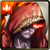 帶來死亡的騎士．火 | 16966 |
R6-1有越攻越強，必須盡快解決。 R9有固定扣血，需要盡快解決。 此血量剛好能撐住R10-1敵人的攻擊。 |
| 帶來死亡的騎士．木 | 8310 (16021) |
此血量剛好能撐住R6-2敵人的攻擊。 (由於可能遇到無視減傷的木龍牙棋，建議血量達到16021) |
| 帶來死亡的騎士．光 | 3825 | 此血量剛好能撐住R3敵人的最大攻擊(隊伍中有4個種族以上時)。 |
| 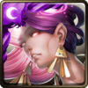 帶來死亡的騎士．暗 | 3358 | 此血量剛好能撐住R9敵人的攻擊。 |
| 關卡 | 建議血量 | 備註 |
| 北域巨人 | ||
| 沉睡雪嶺的靈魂．水 | 4231 | 此血量剛好能撐住R3所有敵人的攻擊。 |
| 沉睡雪嶺的靈魂．火 | 7287 |
R7有越戰越強，請拿捏好敵方血量再爆發。 此血量剛好能撐住R6敵人的攻擊與連續反擊。 |
| 沉睡雪嶺的靈魂．木 | 2865 (20040) |
R3所需血量過高，必須盡快解決。 此血量剛好能撐住R7敵人的攻擊。 (若血量達20040則可撐住R3所有敵人的攻擊) |
| 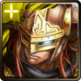 沉睡雪嶺的靈魂．光 | 5360 | 此血量剛好能撐住R6所有敵人的攻擊。 |
| 沉睡雪嶺的靈魂．暗 | 2643 (3173) |
R3有越戰越強，請拿捏好敵方血量再爆發。 此血量剛好能撐住R7敵人的攻擊。 (若血量達3173則可撐住R3敵人的最大攻擊) |
| 關卡 | 建議血量 | 備註 |
| 碎羽墮落者 | ||
| 操控人心的墮落者．水 | 3273 |
R9有越戰越強，請拿捏好敵方血量再爆發。 此血量剛好能撐住R10-1敵人的攻擊。 (此血量未計算R10-2的種族剋制) |
| 操控人心的墮落者．火 | 11615 | 此血量剛好能撐住R9敵人的七次連擊。 |
| 操控人心的墮落者．木 | 3207 | 此血量剛好能撐住R10-1敵人的攻擊。 |
| 操控人心的墮落者．光 | 11683 |
R9有固定扣血，需要盡快解決。 此血量剛好能撐住術士亞歷克斯的攻擊。 |
| 操控人心的墮落者．暗 | 11683 | 此血量剛好能撐住術士亞歷克斯的攻擊。 |
| 關卡 | 建議血量 | 備註 |
| 仙劍列傳 | ||
| 以下關卡已永久關閉 | ||
| 堅定不移的意志 | 7385 | 此血量剛好能撐住R9敵人的攻擊與連續反擊。 |
| 行為炫目的半妖 | 5304 |
R10有越戰越強，請拿捏好敵方血量再爆發。 此血量剛好能撐住R11-2敵人的六次連擊。 |
| 尋覓生命的定義 | 10057 | 此血量剛好能撐住R10敵人的攻擊。 |
| 夏侯少主的異想 | 7379 | 此血量剛好能撐住R9敵人的攻擊。 |
| 瑕在瑾中異世行 | 9134 | 此血量剛好能撐住R10敵人的七次連擊。 |
| 關卡 | 建議血量 | 備註 |
| 童話仙蹤 | ||
| 尋覓心的旅程 | 2295 (2698) |
R6有固定扣血，需要盡快解決。 此血量剛好能撐住R10敵人的攻擊。 (若血量達到2698則可撐住R8魔源繼主．奧茲瑪的攻擊) |
| 尋不回真我的下場 | 4201 (16704) |
R9所需血量過高，必須盡快解決。 此血量剛好能撐住R6所有敵人的攻擊。 (若血量達16704則可撐住R9敵人的攻擊) |
| 尋找思考的步伐 | 3747 (21137) |
R6所需血量過高，必須盡快解決。 此血量剛好能撐住R9敵人的攻擊。 (若血量達21137則可撐住R6所有敵人的攻擊) |
| 展開尋樂之旅 | 11977 |
R6有回復變零，需要盡快解決。 此血量剛好能撐住R10敵人的六連擊。 |
| 尋找勇氣之途 | 5900 |
R9有越戰越強，請拿捏好敵方血量再爆發。 此血量剛好能撐住R3敵人的攻擊。 |
| 關卡 | 建議血量 | 備註 |
| 怪物彈珠 | ||
| 以下關卡已永久關閉 | ||
| 遠古的素盞雄大神 | 2883 |
R6若遇到越攻越強必須盡快解決。 此血量剛好能撐住R6獅子宮．加里昂的攻擊。 |
| 高天原的統治者 | 9659 |
R9不論遇到誰都必須盡快解決。 此血量剛好能撐住R10的七次連擊。 |
| 八岐大蛇的祭禮 | 6013 |
R6若遇到越攻越強必須盡快解決。 此血量剛好能撐住R6巨蟹宮．約翰的攻擊。 |
| 天妃娘娘的恩澤 | 2987 (12685) |
R9有越戰越強，請拿捏好敵方血量再爆發。 此血量剛好能撐住R10敵人的攻擊。 (若血量達12685則可撐住R11-2的連擊) (此血量未計算R11-1的種族剋制) |
| 掌管夜國的女神 | 10409 (18643) |
此血量剛好能撐住R10敵人的連擊。 (若血量達18643則可撐住R9增攻後的攻擊) (此血量未計算R11-1的種族剋制) |
| 關卡 | 建議血量 | 備註 |
| 巴比倫神明 | ||
| 英雄的淚 | 3307 |
R3所需血量過高，必須盡快解決。 此血量剛好能撐住R6所有敵人的攻擊。 |
| 善惡之焰 | 3506 |
R6-2有越戰越強，請拿捏好敵方血量再爆發。 此血量剛好能撐住R10所有敵人的攻擊。 |
| 綻放的花 | 3297 | 此血量剛好能撐住R3敵人的攻擊。 |
| 母的遺憾 | 10053 (19423) |
R10-2有越攻越強，必須盡快解決。 此血量剛好能撐住R6-2敵人的攻擊。 (若血量達19423則可撐住R6-1增攻後的攻擊) |
| 巫醫之念 | 4576 (11316) |
此血量剛好能撐住R10-1敵人的攻擊。 (若血量達11316則可撐住R10-2的七次連擊) |
| 關卡 | 建議血量 | 備註 |
| 撒旦魔將 | ||
| 以下關卡已永久關閉 | ||
| 緣起軒轅越時空．水 | 3929 | 此血量剛好能撐住R3所有敵人的攻擊。 |
| 緣起軒轅越時空．火 | 4603 (17459) |
此血量剛好能撐住R3所有敵人的攻擊。 (若血量達17459則可撐住R6的六下反擊與攻擊) |
| 緣起軒轅越時空．木 | 7659 |
R5可能遇到越戰越強，請拿捏好敵方血量再爆發。 此血量剛好能撐住R3所有敵人的攻擊。 |
| 緣起軒轅越時空．光 | 3735 |
R5可能遇到越戰越強，請拿捏好敵方血量再爆發。 此血量剛好能撐住R3敵人復活後的攻擊。 |
| 緣起軒轅越時空．暗 | 4719 |
R6有越戰越強，請拿捏好敵方血量再爆發。 此血量剛好能撐住R5所有敵人的攻擊。 |
| 關卡 | 建議血量 | 備註 |
| 星詠之歌姬 | ||
| 星詠之歌姬 | 2199 (3379) |
R5、R10有固定扣血，需要盡快解決。 R9有越戰越強，請拿捏好敵方血量再爆發。 此血量剛好能撐住R7所有敵人的攻擊。 (若血量達3379則可撐住R6夜言歌姬．希的連擊) |
| 海浪八音盒 | 3204 |
R3有越戰越強，請拿捏好敵方血量再爆發。 此血量剛好能撐住R3所有敵人的攻擊。 |
| 焚風自鳴琴 | 2173 (9173) |
R9有越戰越強，請拿捏好敵方血量再爆發。 此血量剛好能撐住R3敵人的攻擊。 (若血量達9173則可撐住R6的六下反擊及攻擊) |
| 風詠音樂盒 | 3610 |
R9有固定扣血，需要盡快解決。 此血量剛好能撐住R6所有敵人的攻擊。 |
| 關卡 | 建議血量 | 備註 |
| 百鬼夜行 | ||
| 命途坎坷的妖怪．水 | 3930 |
此血量剛好能撐住R4所有敵人的攻擊。 (此血量未計算R11的屬性剋制) |
| 命途坎坷的妖怪．火 | 7841 |
R11有固定扣血，需要盡快解決。 R13-2有越戰越強，請拿捏好敵方血量再爆發。 此血量剛好能撐住R4所有敵人的攻擊。 (此血量未計算R4的種族剋制) |
| 命途坎坷的妖怪．木 | 4517 |
R4有固定扣血，需要盡快解決。 R11有越攻越強，必須盡快解決。 此血量剛好能撐住R7所有敵人的攻擊。 |
| 命途坎坷的妖怪．光 | 4114 (4527) |
R11有固定扣血，需要盡快解決。 此血量剛好能撐住R7所有敵人的攻擊。 (由於可能遇到無視減傷的神罰使者安迪莉亞，建議血量達到4527) |
| 命途坎坷的妖怪．暗 | 5307 | 此血量剛好能撐住R4所有敵人的攻擊。 |
| 關卡 | 建議血量 | 備註 |
| 修驗道式神 | ||
| 修驗道的使鬼．水 | 5448 |
R11有固定扣血，需要盡快解決。 此血量剛好能撐住R6所有敵人的攻擊。 |
| 修驗道的使鬼．火 | 4283 |
R9所需血量過高，必須盡快解決。 此血量剛好能撐住R6所有敵人的攻擊。 |
| 修驗道的使鬼．木 | 4734 |
R9所需血量過高，必須盡快解決。 R11有越戰越強，請拿捏好敵方血量再爆發。 此血量剛好能撐住R6所有敵人的攻擊。 |
| 修驗道的使鬼．光 | 8211 |
R3有越攻越強，必須盡快解決。 R6有固定扣血，需要盡快解決。 此血量剛好能撐住R9敵人的七次連擊。 |
| 修驗道的使鬼．暗 | 7404 | 此血量剛好能撐住R6所有敵人的攻擊。 |
| 關卡 | 建議血量 | 備註 |
| 要塞兵團 | ||
| 割不斷的羈絆．水 | 3144 (9373) |
此血量剛好能撐住機械工程兵的攻擊。 (由於可能遇到無視減傷的蒸氣火力手，建議血量達到9373) |
| 割不斷的羈絆．火 | 3144 (9373) (10460) |
此血量剛好能撐住機械工程兵的攻擊。 (由於可能遇到無視減傷的蒸氣火力手，建議血量達到9373) (若血量達10460則可撐住R6的六下反擊及攻擊) |
| 命運共同體．木 | 4226 (9373) (17286) |
R5所需血量過高，必須盡快解決。 此血量剛好能撐住R7敵人的攻擊。 (由於可能遇到無視減傷的蒸氣火力手，建議血量達到9373) (若血量達17286則可撐住R5的攻擊) |
| 割不斷的羈絆．光 | 2895 (8629) |
R6有固定扣血，需要盡快解決。 R7有越戰越強，請拿捏好敵方血量再爆發。 此血量剛好能撐住機械工程兵的攻擊。 (由於可能遇到無視減傷的蒸氣火力手，建議血量達到8629) |
| 命運共同體．暗 | 3144 (8629) |
此血量剛好能撐住機械工程兵的攻擊。 (由於可能遇到無視減傷的蒸氣火力手，建議血量達到8629) |
| 關卡 | 建議血量 | 備註 |
| 遠古的恐懼 | ||
| 驚濤異族的恐怖 | 2497 |
可能會遇到固定扣血的諾弗．刻，需要盡快解決。 R3有固定扣血，需要盡快解決。 R9有越戰越強，請拿捏好敵方血量再爆發。 此血量剛好能撐住R10-1敵人的攻擊。 |
| 活火蔓延的恐怖 | 4073 (19561) |
可能會遇到越戰越強的腹蛇異兵，請拿捏好敵方血量再爆發。 R9所需血量過高，必須盡快解決。 此血量剛好能撐住R10-2敵人的攻擊。 (若血量達到19561則可撐住R9的攻擊) |
| 噬魂祖蟾的恐怖 | 4456 |
R10-1有越戰越強，請拿捏好敵方血量再爆發。 R10-2有固定扣血，需要盡快解決。 此血量剛好能撐住R9所有敵人的攻擊。 (此血量未計算R6的種族剋制) |
| 異端古神的恐怖 | 6828 (19055) |
R10所需血量過高，必須盡快解決。 此血量剛好能撐住R9所有敵人的攻擊。 (若血量達到19055則可撐住R10的連擊) |
| 星族異種的恐怖 | 6908 |
R3所需血量過高，必須盡快解決。 此血量剛好能撐住R6敵人的攻擊。 |
| 關卡 | 建議血量 | 備註 |
| 魔境住民 | ||
| 瘋癲的茶客 | 4356 (4806) (6702) (10497) |
此血量剛好能撐住R3所有敵人的攻擊。 (若血量達到4806則可撐住R8棋盤之主．白皇后的七次連擊) (若血量達到6702則可撐住R9對純神族隊的攻擊) (若血量達到10497則可撐住R3對純人類隊的攻擊) (此血量未計算R3的種族剋制) |
| 狂人的茶會 | 4002 (4806) (10681) |
R9有越戰越強，請拿捏好敵方血量再爆發。 R10有固定扣血，需要盡快解決。 此血量剛好能撐住R9所有敵人的攻擊。 (若血量達到4806則可撐住R8棋盤之主．白皇后的七次連擊) (由於可能遇到無視減傷的木龍牙棋，建議血量達到10681) |
| 墮進魔境之洞 | 6685 (10681) |
R6有固定扣血，需要盡快解決。 此血量剛好能撐住R6所有敵人的攻擊。 (由於可能遇到無視減傷的木龍牙棋，建議血量達到10681) |
| 被喚醒的睡獸 | 5630 (9311) |
此血量剛好能撐住R9所有敵人的攻擊。 (若血量達到9311則可撐住R9對純魔族隊的攻擊) (此血量未計算R9的種族剋制) |
| 魔境的岔路 | 4231 (4806) (10681) |
此血量剛好能撐住R9所有敵人的攻擊。 (若血量達到4806則可撐住R8棋盤之主．白皇后的七次連擊) (由於可能遇到無視減傷的木龍牙棋，建議血量達到10681) |
| 關卡 | 建議血量 | 備註 |
| 七原罪 | ||
| 王者的呢喃 | 4193 (10681) |
此血量剛好能撐住R6所有敵人的攻擊。 (由於可能遇到無視減傷的木龍牙棋，建議血量達到10681) |
| 王者的氣派 | 4082 |
R9所需血量過高，必須盡快解決。 此血量剛好能撐住R6所有敵人的攻擊。 |
| 王者的慾念 | 3767 (4987) |
此血量剛好能撐住R6所有敵人的攻擊。 (若血量達到4987則可撐住R9敵人的攻擊和自爆) |
| 王者的怒吼 | 16480 |
R9有越戰越強，請拿捏好敵方血量再爆發。 此血量剛好能撐住R5所有敵人的攻擊。 |
| 王者的掠奪 | 4584 |
R6有越戰越強，請拿捏好敵方血量再爆發。 R9所需血量過高，必須盡快解決。 此血量剛好能撐住R10敵人復活後的攻擊。 |
| 王者的血祭 | 8960 |
R5可能出現越戰越強，請拿捏好敵方血量再爆發。 R9所需血量過高，必須盡快解決。 此血量剛好能撐住R5兩隻花豔史萊姆的攻擊。 (本關卡限制60回合，不適合使用磨隊) |
| 關卡 | 建議血量 | 備註 |
| 貓公爵傭兵團 | ||
| 傭兵的戰場．水 | 6054 (14102) |
此血量剛好能撐住R9所有敵人的攻擊。 (若血量達到14102則可撐住R6負罪役夫．尼祿的攻擊) |
| 傭兵的戰場．火 | 3774 (14102) |
此血量剛好能撐住R9所有敵人的攻擊。 (若血量達到14102則可撐住R6負罪役夫．尼祿的攻擊) |
| 傭兵的戰場．木 | 2318 (14102) |
R9有越戰越強，請拿捏好敵方血量再爆發。 R9所需血量過高，必須盡快解決。 此血量剛好能撐住R5所有敵人的攻擊。 (若血量達到14102則可撐住R6負罪役夫．尼祿的攻擊) |
| 傭兵的戰場．光 | 5164 (14102) |
此血量剛好能撐住R3所有敵人的攻擊。 (若血量達到14102則可撐住R6負罪役夫．尼祿的攻擊) |
| 傭兵的戰場．暗 | 2230 (14102) |
R6所需血量過高，必須盡快解決。 R10有越戰越強，請拿捏好敵方血量再爆發。 此血量剛好能撐住R9敵人的攻擊。 (若血量達到14102則可撐住R6負罪役夫．尼祿的攻擊) |
| 第九階段封印 | 第八階段封印 | 第七階段封印 |
| 神域大殿 | 聖殿傳送陣 | 空幻大堂 |
| 聖城尼比魯 | 迷鎖門廊 | 嗜血淵獄 | 星雲神壇 | 淨水幻泉 | 天門長廊 |
| 天界的門廊 | 冥界神殿 | 鷹揚神殿 | 颶風神殿 | 戰火神殿 | 沛雨神殿 |
| 關卡 | 建議血量 | 備註 |
| 第九階段封印 - 神域大殿 | ||
| 激烈的戰鬥 | ||
| 將元素導回世界 | 14633 |
R7-1、R9-3所需血量過高，必須盡快解決。 R7-2有生命倒數，必須盡快解決或是多帶狀態技能隊員以解除生命倒數。 R9-2有固定扣血(左右部位)，需要盡快解決。 R9-2有越戰越強(本體)，請拿捏好敵方血量再爆發。 此血量剛好能撐住R3敵人的攻擊。 |
| 暗影的殺戮 | 12719 |
R5-1有越攻越強，需要盡快解決。 R7-2有越戰越強，請拿捏好敵方血量再爆發。 此血量剛好能撐住R5-1敵人的第三下攻擊。 |
| 夜空的星象 | 16996 |
R3有越攻越強，需要盡快解決。 此血量剛好能撐住R7-1敵人的攻擊。 |
| 大地的旨意 | 3749 |
R2所需血量過高，必須盡快解決。 R3有固定扣血100%，必須盡快解決。 此血量剛好能撐住R7-1敵人的攻擊。 |
| 崇高的熽火 | 3296 |
R3有越戰越強，請拿捏好敵方血量再爆發。 R5-1、R7-2所需血量過高，必須盡快解決。 此血量剛好能撐住R5-2敵人的攻擊。 |
| 海浪的遊戲 | 15659 |
R3有越攻越強，需要盡快解決。 此血量剛好能撐住R3敵人的第五下攻擊。 |
| 關卡 | 建議血量 | 備註 |
| 第九階段封印 - 聖殿傳送陣 | ||
| 操控一切的主神 | ||
| 名為勇氣的力量 | 12907 |
R1有固定扣血，需要盡快解決。 R3有越戰越強，請拿捏好敵方血量再爆發。 R9有越攻越強，需要盡快解決。 R10-2有生命倒數，必須多帶狀態技能隊員以解除生命倒數。 此血量剛好能撐住R9敵人的第五下攻擊。 |
| 不屈的意志 | 14248 (19565) |
R5-1所需血量過高，必須盡快解決。 此血量剛好能撐住R3敵人的攻擊。 (若血量達到19565則可撐住R5-1敵人的連擊) |
| 更強大的存在 | 15835 |
R7-2有越攻越強，需要盡快解決。 此血量剛好能撐住R5-2敵人的攻擊。 |
| 來自裂痕的聲音 | 14180 |
R5-1有越戰越強，請拿捏好敵方血量再爆發。 R7-1所需血量過高，必須盡快解決。 R7-2有固定扣血100%，必須盡快解決。 此血量剛好能撐住R3敵人的攻擊。 |
| 混沌裡的雷光 | ||
| 神皇的尊嚴 | 17871 |
R6、R9所需血量過高，必須盡快解決。 R10-2有越攻越強，需要盡快解決。 此血量剛好能撐住R7-1敵人的攻擊。 |
| 無法壓止的雷霆 | 14120 |
R5-2有越戰越強，請拿捏好敵方血量再爆發。 此血量剛好能撐住R7-1敵人的攻擊。 |
| 冥界之主的嘲諷 | 15211 |
R6有越攻越強，需要盡快解決。 R7-1有生命倒數，必須多帶狀態技能隊員以解除生命倒數。 此血量剛好能撐住R6敵人的第四下攻擊。 |
| 海神的考驗 | 15172 |
此血量剛好能撐住R5-2敵人的五下連擊。 |
| 關卡 | 建議血量 | 備註 |
| 第九階段封印 - 空幻大堂 | ||
| 眾神的真面目 | ||
| 火神的阻撓 | 13680 |
R6有越攻越強，需要盡快解決。 R8有固定扣血，需要盡快解決。 R9有越扣越強，需要盡快解決。 此血量剛好能撐住R7-1敵人的攻擊。 |
| 智慧女神的戰鬥 | 15786 |
此血量剛好能撐住R3敵人的八下連擊。 |
| 月夜女神的命令 | 16463 |
R3所需血量過高，必須盡快解決。 R7-2有越戰越強，請拿捏好敵方血量再爆發。 此血量剛好能撐住R5雙劍士．波魯克斯的連擊。 |
| 光明神的憤怒 | 13674 | 此血量剛好能撐住R7-1敵人的攻擊。 |
| 謎團的答案 | ||
| 被背叛的眾生 | 13179 |
R5-1有越攻越強，需要盡快解決。 R5-2、R6有越扣越強，需要盡快解決。 此血量剛好能撐住R5-1敵人的第五下攻擊。 |
| 不能揭示的真相 | 10804 |
R7-2有固定扣血100%，必須盡快解決。 此血量剛好能撐住R3敵人的攻擊與連續反擊。 |
| 被阻擋的前路 | 11759 |
R3有固定扣血，需要盡快解決。 R7-1所需血量過高，必須盡快解決。 此血量剛好能撐住R2敵人的七下連擊。 此血量撐不住R5敵人的狂暴。 |
| 猶格索托斯的啟示 | 15915 |
R3有越戰越強，請拿捏好敵方血量再爆發。 R7-2有越攻越強，需要盡快解決。 此血量剛好能撐住R7-2敵人的第五下攻擊。 |
| 關卡 | 建議血量 | 備註 |
| 第八階段封印 - 聖城尼比魯 | ||
| 激戰的先兆 | ||
| 將一切逆轉 | 10699 |
R3有固定扣血與越攻越強，需要盡快解決。 R4-1所需血量過高，必須盡快解決。 R10-1有越戰越強，請拿捏好敵方血量再爆發。 此血量剛好能撐住R9敵人的攻擊。 |
| 關卡 | 建議血量 | 備註 |
| 第八階段封印 - 迷鎖門廊 | ||
| 潛藏的真相 | ||
| 只屬於眾神的世界 | 16513 |
此血量剛好能撐住R9敵人的連擊。 (由於可能遇到越攻越強/固定扣血的火劍守衛/暗鐮守衛，建議盡快解決) |
| 只屬於眾神的世界 | 16513 |
此血量剛好能撐住R9敵人的連擊。 (由於可能遇到越攻越強/固定扣血的火劍守衛/暗鐮守衛，建議盡快解決) |
| 奪取元素之力 | 8653 |
R3所需血量過高，必須盡快解決。 R5有越戰越強，請拿捏好敵方血量再爆發。 此血量剛好能撐住R7敵人的攻擊。 (注意無法同時撐住R7敵人的攻擊與反擊) |
| 天神的計謀 | 12341 (15336) |
R5有越攻越強，必須盡快解決。 此血量剛好能撐住R6敵人的攻擊。 (若血量達到15336則可撐住R7敵人的七下連擊) |
| 嚮往的理想鄉 | ||
| 不甘屈服 | 9674 |
R2、R5-1有越攻越強，必須盡快解決。 R3所需血量過高，必須盡快解決。 R8有固定扣血，需要盡快解決。 R10有越戰越強，請拿捏好敵方血量再爆發。 此血量剛好能撐住R5-1敵人的中毒和第三下攻擊。 |
| 崩壞的理想 | 6867 |
R7有固定扣血100%，必須盡快解決。 此血量剛好能撐住R2所有敵人的攻擊。 |
| 烏托邦 | 7548 |
R5所需血量過高，必須盡快解決。 R6有固定扣血，需要盡快解決。 此血量剛好能撐住R3所有敵人的攻擊。 |
| 尋找居處的旅程 | ||
| 接觸與邂逅 | 14229 |
需多帶狀態技能隊員以解除無視減傷。 R7有越戰越強，請拿捏好敵方血量再爆發。 R9有固定扣血，需要盡快解決。 此血量剛好能撐住R4-2敵人的攻擊。 |
| 踏足新世界 | 14865 |
R6有越戰越強，請拿捏好敵方血量再爆發。 此血量剛好能撐住R7敵人的攻擊。 |
| 悠久之旅 | 10690 | 此血量剛好能撐住R5敵人的攻擊。 |
| 關卡 | 建議血量 | 備註 |
| 第八階段封印 - 嗜血淵獄 | ||
| 存在的價值 | ||
| 待在你身邊 | 15295 |
R6有越戰越強，請拿捏好敵方血量再爆發。 R10-1有攻後死亡，需要盡快解決。 此血量剛好能撐住R8敵人的七下連擊。 |
| 微妙的感情 | 12992 | 此血量剛好能撐住R2敵人的七下連擊。 |
| 攜手同心 | 13973 |
R4有固定扣血，需要盡快解決。 R7有越戰越強，請拿捏好敵方血量再爆發。 此血量剛好能撐住R3所有敵人的最大攻擊。 |
| 眾仙的戰鬥 | ||
| 生性好戰 | 12631 |
R9所需血量過高，必須盡快解決。 R10有越戰越強，請拿捏好敵方血量再爆發。 此血量剛好能撐住R1所有敵人的攻擊。 |
| 奉命行事 | 7345 |
R3有越攻越強，必須盡快解決。 此血量剛好能撐住R3敵人的第五下攻擊。 |
| 冥頑不靈 | 9195 | 此血量剛好能撐住R3所有敵人的攻擊。 |
| 元素與靈獸 | ||
| 宮殿裡的妖狐 | 15624 |
R7有固定扣血100%，必須盡快解決。 此血量剛好能撐住R2敵人的攻擊。 |
| 元素煉造石猴 | 7148 |
R2有越戰越強，請拿捏好敵方血量再爆發。 此血量剛好能撐住R4敵人的攻擊與連續反擊。 |
| 妖界與靈牛 | 6317 |
R6有越戰越強，請拿捏好敵方血量再爆發。 R7狂暴後所需血量過高，必須盡快解決。 此血量剛好能撐住R3所有敵人的攻擊。 |
| 關卡 | 建議血量 | 備註 |
| 第八階段封印 - 星雲神壇 | ||
| 命運的考驗 | ||
| 致命的瘟疫 | 17779 |
需多帶狀態技能隊員(人類佳，否則R1撐不到開技能)以解除無視減傷。 R10-2有越戰越強，請拿捏好敵方血量再爆發。 此血量剛好能撐住R10-1敵人的攻擊。 |
| 守書的神鳥 | 5779 (9327) |
此血量剛好能撐住R4敵人的攻擊。 (由於可能遇到無視減傷的木斧守衛，建議血量達到9327) (由於可能遇到越攻越強/固定扣血的火劍守衛/暗鐮守衛，建議盡快解決) |
| 大洪水 | 2961 (9327) |
此血量剛好能撐住R7敵人的攻擊。 (由於可能遇到無視減傷的木斧守衛，建議血量達到9327) (由於可能遇到越攻越強/固定扣血的火劍守衛/暗鐮守衛，建議盡快解決) |
| 團結起來的人族 | ||
| 命定的一切 | 9746 |
R2有固定扣血，需要盡快解決。 R5有越戰越強，請拿捏好敵方血量再爆發。 此血量剛好能撐住R7敵人的最大攻擊。 |
| 守護之力 | 3901 (9327) |
此血量剛好能撐住R6敵人的攻擊。 (由於可能遇到無視減傷的木斧守衛，建議血量達到9327) (由於可能遇到越攻越強/固定扣血的火劍守衛/暗鐮守衛，建議盡快解決) |
| 我們是一個族群 | 2835 (9327) |
此血量剛好能撐住R5所有敵人的攻擊。 (由於可能遇到無視減傷的木斧守衛，建議血量達到9327) (由於可能遇到越攻越強/固定扣血的火劍守衛/暗鐮守衛，建議盡快解決) |
| 古神的教導 | ||
| 生命之源 | 13253 |
R10有固定扣血100%，必須盡快解決。 此血量剛好能撐住R1兩隻火劍守衛的攻擊。 |
| 族群的重要 | 15222 | 此血量剛好能撐住R4敵人的攻擊。 |
| 無法壓抑的求知慾 | 2595 (9327) |
此血量剛好能撐住R5所有敵人的攻擊。 (由於可能遇到無視減傷的木斧守衛，建議血量達到9327) (由於可能遇到越攻越強/固定扣血的火劍守衛/暗鐮守衛，建議盡快解決) |
| 關卡 | 建議血量 | 備註 |
| 第八階段封印 - 淨水幻泉 | ||
| 日夕神族 | ||
| 如火的黃昏 | 5070 (9327) |
此血量剛好能撐住R8所有敵人的攻擊。 (由於可能遇到無視減傷的木斧守衛，建議血量達到9327) (由於可能遇到越攻越強/固定扣血的火劍守衛/暗鐮守衛，建議盡快解決) |
| 勝利的象徵 | 4170 | 此血量剛好能撐住R7敵人復活後的攻擊。 |
| 逝者之愛 | 6835 |
R4、R7有固定扣血，需要盡快解決。 此血量剛好能撐住R4所有敵人的攻擊。 |
| 北域的湧流 | ||
| 仇恨的連鎖 | 4151 (9327) |
R1有固定扣血，需要盡快解決。 此血量剛好能撐住R6所有敵人的攻擊。 (由於可能遇到無視減傷的木斧守衛，建議血量達到9327) (由於可能遇到越攻越強/固定扣血的火劍守衛/暗鐮守衛，建議盡快解決) |
| 神鎚開闢前路 | 3688 | 此血量剛好能撐住R5敵人的最大攻擊(隊伍含4種族或以上)。 |
| 錯長的愛根 | 15847 | 此血量剛好能撐住R7敵人的七次連擊。 |
| 幻泉的記憶 | ||
| 飛翔的灰燼 | 9981 |
R1有越攻越強，必須盡快解決。 R9有越戰越強，請拿捏好敵方血量再爆發。 此血量剛好能撐住R1敵人的第三下攻擊。 (由於可能遇到越攻越強/固定扣血的火劍守衛/暗鐮守衛，建議盡快解決) |
| 命運的道路 | 4910 | 此血量剛好能撐住R3所有敵人的攻擊。 |
| 冰結的睿智 | 6778 |
R2有固定扣血，需要盡快解決。 此血量剛好能撐住R10敵人的攻擊與連續反擊。 |
| 關卡 | 建議血量 | 備註 |
| 第八階段封印 - 天門長廊 | ||
| 生命的引導 | ||
| 死靈的歸處 | 15489 |
R8有越戰越強，請拿捏好敵方血量再爆發。 此血量剛好能撐住R5天空俠盜．布瑪的攻擊。 (由於可能遇到越攻越強/固定扣血的火劍守衛/暗鐮守衛，建議盡快解決) |
| 導向正途 | 7169 |
R1有固定扣血，需要盡快解決。 R2有越攻越強，必須盡快解決。 R4所需血量過高，必須盡快解決。 此血量剛好能撐住R2敵人的第五下攻擊。 |
| 對神的信奉 | 5269 | 此血量剛好能撐住R7敵人的攻擊。 |
| 精獸的創造主 | ||
| 知識與情感 | 15489 |
R5有可能遇到固定扣血，請拿捏好敵方血量再爆發。 此血量剛好能撐住R5天空俠盜．布瑪的攻擊。 此血量無法撐住R9敵人的攻擊與反擊。 (由於可能遇到越攻越強/固定扣血的火劍守衛/暗鐮守衛，建議盡快解決) |
| 清淨的空氣 | 4604 |
R5有固定扣血100%，必須盡快解決。 此血量剛好能撐住R3所有敵人的攻擊。 (此血量只計算R3大聖的屬性剋制) |
| 水流的源頭 | 15336 |
R1有固定扣血，需要盡快解決。 此血量剛好能撐住R7敵人的六次連擊。 |
| 始祖元素之力 | ||
| 打破宿命 | 12715 |
R5有可能遇到越戰越強，請拿捏好敵方血量再爆發。 此血量剛好能撐住R10敵人的攻擊。 (由於可能遇到越攻越強/固定扣血的火劍守衛/暗鐮守衛，建議盡快解決) |
| 堅守使命 | 14198 |
R3、R7有越戰越強，請拿捏好敵方血量再爆發。 此血量剛好能撐住R2敵人的攻擊。 |
| 偶遇的恩賜 | 4351 | 此血量剛好能撐住R5所有敵人的攻擊。 |
| 關卡 | 建議血量 | 備註 |
| 第七階段封印 - 天界的門廊 | ||
| 懸於天際的秤陀 | 4416 | 此血量剛好能撐住R9所有敵人的攻擊。 |
| 涓滴堆積希望 | 2703 | 此血量剛好能撐住R7敵人的連擊。 |
| 生命的循環 | 2441 (4661) |
此血量剛好能撐住R10敵人的攻擊。 (由於可能遇到無視減傷的煉屍術士凱莉絲，建議血量達到4661) |
| 大地給予庇佑 | 2210 (4661) |
此血量剛好能撐住R7敵人的攻擊。 (由於可能遇到無視減傷的煉屍術士凱莉絲，建議血量達到4661) |
| 相扶的協定 | 2621 | 此血量剛好能撐住R10敵人的攻擊。 |
| 龍焰借予力量 | 1375 |
R7有越戰越強，請拿捏好敵方血量再爆發。 此血量剛好能撐住R7敵人的攻擊。 |
| 承傳的志向 | 3245 |
R3有固定扣血，需要盡快解決。 此血量剛好能撐住R10敵人的攻擊。 (由於可能遇到固定扣血的鍊金巫師莉莉絲，建議盡快解決) |
| 亡者託付靈魂 | 2773 |
此血量剛好能撐住R7敵人的攻擊。 (由於可能遇到固定扣血的鍊金巫師莉莉絲，建議盡快解決) |
| 共存的意念 | 4968 | 此血量剛好能撐住R10所有敵人的攻擊。 |
| 榮光授予帥印 | 2737 | 此血量剛好能撐住R7敵人的攻擊。 |
| 關卡 | 建議血量 | 備註 |
| 第七階段封印 - 冥界神殿 | ||
| 管治亡靈的冥神 | 3559 |
R10有固定扣血，需要盡快解決。 此血量剛好能撐住R9所有敵人的攻擊。 (由於可能遇到固定扣血的鍊金巫師莉莉絲，建議盡快解決) |
| 魔獸的無盡慾望 | 5097 |
此血量剛好能撐住R6所有敵人的攻擊。 (此血量未計算R6的種族剋制) (由於可能遇到固定扣血的鍊金巫師莉莉絲，建議盡快解決) |
| 將暗影擊敗 | 6222 |
R6、R7有固定扣血，需要盡快解決。 此血量剛好能撐住R6所有敵人的攻擊。 (由於可能遇到固定扣血的鍊金巫師莉莉絲，建議盡快解決) |
| 關卡 | 建議血量 | 備註 |
| 第七階段封印 - 鷹揚神殿 | ||
| 賜予榮譽的鷹神 | 5400 | 此血量剛好能撐住R5所有敵人的攻擊。 |
| 聖者傳承的責任 | 6975 | 此血量剛好能撐住R7敵人的攻擊。 |
| 向諸劍起誓 | 4488 | 此血量剛好能撐住R6所有敵人的攻擊。 |
| 關卡 | 建議血量 | 備註 |
| 第七階段封印 - 颶風神殿 | ||
| 庇護大地的天神 | 5180 |
R9有固定扣血，需要盡快解決。 R10所需血量過高，必須盡快解決。 此血量剛好能撐住R5所有敵人的攻擊。 |
| 聖獸仰望的天空 | 4661 |
R6、R7所需血量皆過高，必須盡快解決。 此血量剛好能撐住無視減傷的煉屍術士凱莉絲的攻擊。 (此血量未計算R6的種族剋制) |
| 乘疾風之途 | 6361 | 此血量剛好能撐住R7敵人的攻擊。 |
| 關卡 | 建議血量 | 備註 |
| 第七階段封印 - 戰火神殿 | ||
| 以戰止戰的龍神 | 6473 | 此血量剛好能撐住R5所有敵人的攻擊。 |
| 玄鳥驟現於火中 | 9621 | 此血量剛好能撐住R7敵人的攻擊。 |
| 劃下炎舞之印 | 4678 |
R7有越戰越強，請拿捏好敵方血量再爆發。 此血量剛好能撐住R6所有敵人的攻擊。 |
| 關卡 | 建議血量 | 備註 |
| 第七階段封印 - 沛雨神殿 | ||
| 降下淚滴的雨神 | 15478 | 此血量剛好能撐住R10 Combo法印的六連擊。 |
| 聖龍從雲霧而來 | 4365 | 此血量剛好能撐住R6所有敵人的攻擊。 |
| 步進水舞之路 | 4402 | 此血量剛好能撐住R6所有敵人的攻擊。 |
| 黃道十二宮 | 封神仙境 | 斯特靈要塞 | 青木原古閣 | 聖地阿斯嘉特 | 神州幻域 |
| 關卡 | 建議血量 | 備註 |
| 黃道十二宮 | ||
| 炎之金牛宮 | 10394 | 此血量剛好能撐住R12所有敵人的攻擊。 |
| 幽之巨蟹宮 | 5323 | 此血量剛好能撐住R10所有敵人的攻擊。 |
| 耀之處女宮 | 5400 |
R14有固定扣血，需要盡快解決。 此血量剛好能撐住R10所有敵人的攻擊。 (此血量未計算R9的種族剋制) |
| 義之天秤宮 | 5446 (9372) (18743) |
R6有固定扣血，需要盡快解決。 R14-1、R14-2所需血量過高，必須盡快解決。 此血量剛好能撐住R10所有敵人的攻擊。 (若血量達到9372則可撐住R14-1的攻擊) (若血量達到18743則可撐住R14-2的攻擊) (此血量未計算R14-1、R14-2的種族剋制) |
| 翠之山羊宮 | 5439 |
R13所需血量過高，必須盡快解決。 此血量剛好能撐住R10所有敵人的攻擊。 |
| 清之水瓶宮 | 9630 |
R15所需血量過高，必須盡快解決。 此血量剛好能撐住R20 Combo法印的六連擊。 |
| 關卡 | 建議血量 | 備註 |
| 封神仙境 | ||
| 錠光圓覺寺 | 12249 |
R6、R14-2、R20-1有越戰越強，請拿捏好敵方血量再爆發。 R17有固定扣血，需要盡快解決。 此血量剛好能撐住R11所有敵人的攻擊。 (此血量未計算R14-1、R15的種族剋制) |
| 雷罡仙道觀 | 6478 |
R12、R18有固定扣血，需要盡快解決。 R14所需血量過高，必須盡快解決。 此血量剛好能撐住R11所有敵人的攻擊。 (此血量未計算R6的種族剋制) |
| 神臺太公廟 | 4026 (7113) |
R9有固定扣血，需要盡快解決。 此血量剛好能撐住R13所有敵人的攻擊。 (此血量未計算R20的種族剋制) (若血量達到7113則可撐住R20對純神族隊的攻擊) |
| 天尊太師座 | 8171 |
R6有固定扣血，需要盡快解決。 R9有越戰越強，請拿捏好敵方血量再爆發。 R14有無視減傷，需要盡快解決。 此血量剛好能撐住R14敵人的攻擊。 |
| 清源二郎庭 | 4225 (7595) |
R14、R18有固定扣血，需要盡快解決。 R19有越戰越強，請拿捏好敵方血量再爆發。 R20有越攻越強，必須盡快解決。 此血量剛好能撐住R15所有敵人的攻擊。 (若血量達到7595則可撐住R20五次攻擊) |
| 關卡 | 建議血量 | 備註 |
| 斯特靈要塞 | ||
| 學者的探求之心 | 6879 | 此血量剛好能撐住R12所有敵人的攻擊。 |
| 半偶的鬱悶之心 | 6419 (9373) (13907) |
R11、R20有越戰越強，請拿捏好敵方血量再爆發。 R17所需血量過高，必須盡快解決。 此血量剛好能撐住R16所有敵人的攻擊。 (由於可能遇到無視減傷的蒸氣火力手，建議血量達到9373) (若血量達到13907則可撐住R17的連擊) |
| 關卡 | 建議血量 | 備註 |
| 青木原古閣 | ||
| 守候的影 | 4829 (5009) |
此血量剛好能撐住R14敵人的攻擊。 (由於可能遇到無視減傷的二口女，建議血量達到5009) |
| 關卡 | 建議血量 | 備註 |
| 聖地阿斯嘉特 | ||
| 不赦之淚 | 4774 |
R14所需血量過高，必須盡快解決。 此血量剛好能撐住R11所有敵人的攻擊。 (此血量未計算R3的種族剋制) |
| 悼靈的考古學者 | 11271 |
R14有越戰越強，請拿捏好敵方血量再爆發。 R16-2有越扣越強，必須盡快解決。 此血量剛好能撐住R9所有敵人的攻擊。 |
| 弗爾克范格女皇 | 11285 (21132) |
R19、R20-2所需血量過高，必須盡快解決。 此血量剛好能撐住R10所有敵人的攻擊。 (若血量達到21132則可撐住R19的攻擊) |
| 關卡 | 建議血量 | 備註 |
| 神州幻域 | ||
| 以下關卡已永久關閉 | ||
| 無我無為 | 18501 |
R5有越攻越強，必須盡快解決。 R14復活後所需血量過高，必須盡快解決。 此血量剛好能撐住R18-2敵人的五下連擊。 |
| 關卡 | 建議血量 | 備註 |
| 守護騎士之道 | 17436 |
R6、R21-2有越攻越強，必須盡快解決。 R8有越戰越強，請拿捏好敵方血量再爆發。 R12-2有首回狂暴，需要盡快解決。 R22所需血量過高，必須盡快解決。 此血量剛好能撐住R21-1敵人的攻擊。 此血量無法撐住R16所有敵人的攻擊及中毒。 |
| 神武東征 | 16461 |
R5、R14有越戰越強，請拿捏好敵方血量再爆發。 R10有首回附加死亡，需要盡快解決。 R13需先解決骷髏屠官以防狂暴。 R17所需血量過高，必須盡快解決。 此血量剛好能撐住R16-2敵人的六下連擊。 |
| 罪孽之環 | 15915 |
R7有越戰越強，請拿捏好敵方血量再爆發。 R8有攻後死亡，需要盡快解決。 R11所需血量過高，必須盡快解決。 R12有越攻越強，必須盡快解決。 此血量剛好能撐住R10-1敵人的六下連擊。 |
| 展開的雙翼 | 13259 |
R10有越扣越強，必須盡快解決。 R15所需血量過高，必須盡快解決。 R16有越攻越強，必須盡快解決。 R18-2有越戰越強，請拿捏好敵方血量再爆發。 此血量剛好能撐住R13敵人的攻擊。 |
| 魔境派對 | 10897 (12700) |
R5、R11有越戰越強，請拿捏好敵方血量再爆發。 R12務必不可一波帶走，此血量撐不住增攻後的攻擊。 R18-1有固定扣血，需要盡快解決。 此血量剛好能撐住R12敵人的攻擊。 (若血量達到12700則可撐住R16-2的攻擊與反擊) |
| 晝夜交替的迷廊 | 9849 |
R16、R20所需血量皆過高，必須盡快解決。 此血量剛好能撐住R17的七次連擊。 |
| 缺暗無光的胡同 | 15341 |
R19需多帶狀態技能隊員以解除無視減傷。 此血量剛好能撐住R16的七次連擊。 |
| 成神之途 | 14948 |
R8、R11有越戰越強，請拿捏好敵方血量再爆發。 R13有CD1的固定扣血90%，需要盡快解決。 此血量剛好能撐住R15的攻擊與反彈。 |
| 墮魔之門 | 13335 |
R13-2需注意敵方反擊。 R14有越攻越強，必須爆發帶過。 R16、R17有固定扣血，需要盡快解決。 此血量剛好能撐住R18敵人的攻擊。 |
| 昇龍之軌 | 6318 |
R14有固定扣血，需要盡快解決。 R15有回復變零，需要盡快解決。 R17有越戰越強，請拿捏好敵方血量再爆發。 此血量剛好能撐住R10所有敵人的攻擊。 |
| 還獸之徑 | 15168 |
R16有越戰越強，請拿捏好敵方血量再爆發。 此血量剛好能撐住R18敵人的攻擊。 (此血量未計算R6、R7、R8的種族剋制) |
| 石碑之園 | 12992 | 此血量剛好能撐住R11敵人的連擊。 |